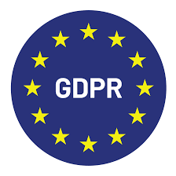
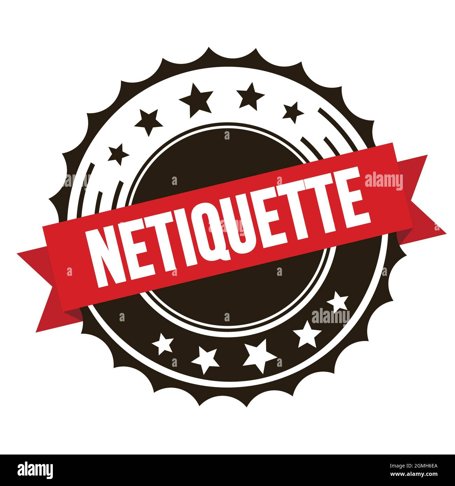
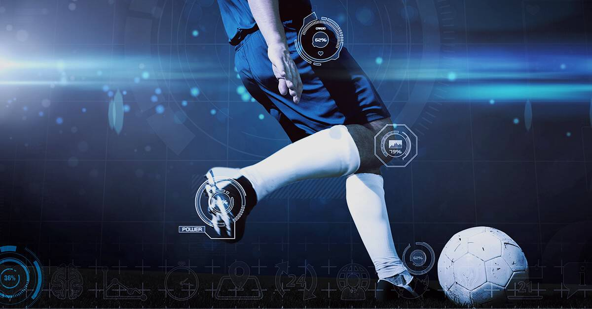

Principi di Cybersicurezza e Minacce Comuni
Nell'era della transizione digitale, la sicurezza informatica non è più solo una necessità tecnica, ma un pilastro fondamentale della cittadinanza attiva e della democrazia. Proteggere le infrastrutture informatiche significa garantire la continuità dei servizi essenziali dello Stato, delle imprese e la tutela della vita privata dei singoli cittadini. I principi cardine della sicurezza si fondano sulla triade della protezione dei dati: preservare la riservatezza delle informazioni sensibili, garantire l'integrità dei sistemi prevenendo manomissioni e assicurare la costante disponibilità delle risorse di rete legittime.
Parallelamente all'evoluzione tecnologica, le minacce informatiche sono diventate sempre più sofisticate e pervasive. Attacchi basati sul social engineering, come il phishing, sfruttano il fattore umano per sottrarre credenziali d'accesso, mentre ceppi di malware evoluti come i ransomware tengono in ostaggio interi database aziendali richiedendo riscatti economici. Comprendere la natura di queste minacce informatiche comuni permette di progettare adeguate barriere difensive e, soprattutto, di diffondere una cultura della prevenzione e della consapevolezza digitale a tutti i livelli sociali.

Normative sulla Privacy e Protezione dei Dati (GDPR)
La gestione responsabile del patrimonio informativo aziendale e personale è strettamente regolata da un impianto legislativo stringente, volto a tutelare i diritti fondamentali delle persone fisiche nello spazio virtuale. Il punto di riferimento globale in materia è il Regolamento Generale sulla Protezione dei Dati (GDPR), introdotto dall'Unione Europea. Questa normativa impone un cambio di paradigma radicale: il cittadino riacquista la piena sovranità e il controllo assoluto sulle proprie informazioni personali, costringendo enti pubblici e imprese private a trattare i dati con criteri rigorosi di trasparenza, liceità e limitazione delle finalità.
Dal punto di vista organizzativo e ingegneristico, il GDPR introduce concetti chiave come la "Privacy by Design" (la protezione dei dati integrata fin dalla fase di progettazione di un software) e la "Privacy by Default" (l'adozione automatica delle impostazioni più restrittive a tutela dell'utente). Le aziende sono tenute a mappare accuratamente i propri flussi informativi, istituire registri dei trattamenti e, ove necessario, nominare un Responsabile della Protezione dei Dati (DPO). La conformità normativa diventa così un indicatore imprescindibile di etica professionale e di affidabilità sul mercato globale.

Il Lessico in Rete e la Netiquette
Internet ha ridefinito radicalmente i confini e le modalità della comunicazione umana, introducendo nuove forme linguistiche che fondono l'istantaneità della lingua parlata con il supporto tipico della scrittura. L'analisi del lessico in rete evidenzia una forte presenza di neologismi, acronimi e prestiti linguistici derivati dall'inglese tecnico, ma mostra anche il rischio latente di una semplificazione eccessiva della sintassi e della perdita delle sfumature emotive, spesso delegate all'uso di elementi grafici come le emoji. Questa velocità espressiva può tradursi in malintesi o, nei casi peggiori, nella proliferazione di linguaggi d'odio (hate speech).
Per contrastare la deriva dei toni nei canali digitali e promuovere un ambiente virtuale inclusivo e sicuro, si fa riferimento alla Netiquette (l'insieme di regole di buona educazione e condotta etica online). Rispettare la netiquette significa applicare i sani principi della convivenza civile anche dietro uno schermo: evitare l'uso del testo interamente in maiuscolo (che equivale a urlare), verificare le fonti prima di condividere contenuti per non alimentare fake news, e argomentare il proprio dissenso senza scadere in attacchi personali o provocazioni sterili, valorizzando la parola come strumento di crescita condivisa.
Censura e Libertà di Stampa: Dai Dati Cartacei al Cloud
Il controllo dell'informazione è da sempre uno degli strumenti prediletti dai regimi autoritari del Novecento per orientare l'opinione pubblica e annullare il dissenso politico. Attraverso apparati burocratici rigidi, la censura storica si abbatteva sui dati cartacei: quotidiani, manifesti e libri venivano sistematicamente ispezionati, sequestrati o modificati prima della pubblicazione. La difesa della libertà di stampa, sancita anche dall'Articolo 21 della Costituzione Italiana, è stata il frutto di lunghe battaglie civili tese a garantire il pluralismo ideologico come pilastro fondamentale di uno Stato democratico e libero.
Con la rivoluzione digitale, il terreno di scontro si è spostato dai supporti fisici alle infrastrutture di rete decentralizzate del Cloud Computing. Se da un lato il cloud e le piattaforme globali permettono una diffusione istantanea e difficilmente arginabile delle informazioni, aggirando le barriere geografiche, dall'altro lato i moderni sistemi autoritari implementano forme sofisticate di cyber-censura. Blocchi DNS, algoritmi di filtraggio dei contenuti e sorveglianza di massa sui server remoti rappresentano i nuovi confini del controllo ideologico, dimostrando come la tutela della libertà d'espressione richieda oggi un'approfondita competenza nella governance tecnologica della rete.

La Tecnologia al Servizio dello Sport
Negli ultimi anni, l'innovazione tecnologica ha rivoluzionato profondamente il mondo delle scienze motorie e delle competizioni atletiche di alto livello. I moderni dispositivi indossabili (wearable devices), dotati di biosensori avanzati, permettono il monitoraggio costante e in tempo reale dei parametri fisiologici degli atleti, come la frequenza cardiaca, i livelli di saturazione dell'ossigeno e la spesa energetica. Questi flussi di dati oggettivi consentono ai preparatori atletici di personalizzare i carichi di allenamento, ottimizzare le fasi di recupero muscolare e prevenire l'insorgenza di infortuni, migliorando significativamente le performance complessive.
Oltre all'ottimizzazione del gesto atletico tramite complessi sistemi di video-analisi biomeccanica, la tecnologia ricopre un ruolo cruciale nella garanzia della giustizia e della trasparenza nelle competizioni sportive. Sistemi digitali di supporto arbitrale come il VAR nel calcio, l'Hawk-Eye (Occhio di Falco) nel tennis e nella pallavolo, o i sistemi di cronometraggio elettronico al millesimo di secondo, riducono drasticamente i margini d'errore umano. L'interazione sinergica tra tecnologia ed educazione motoria promuove così uno sport d'eccellenza, sicuro e fondato sul rispetto rigoroso dei valori del fair play.